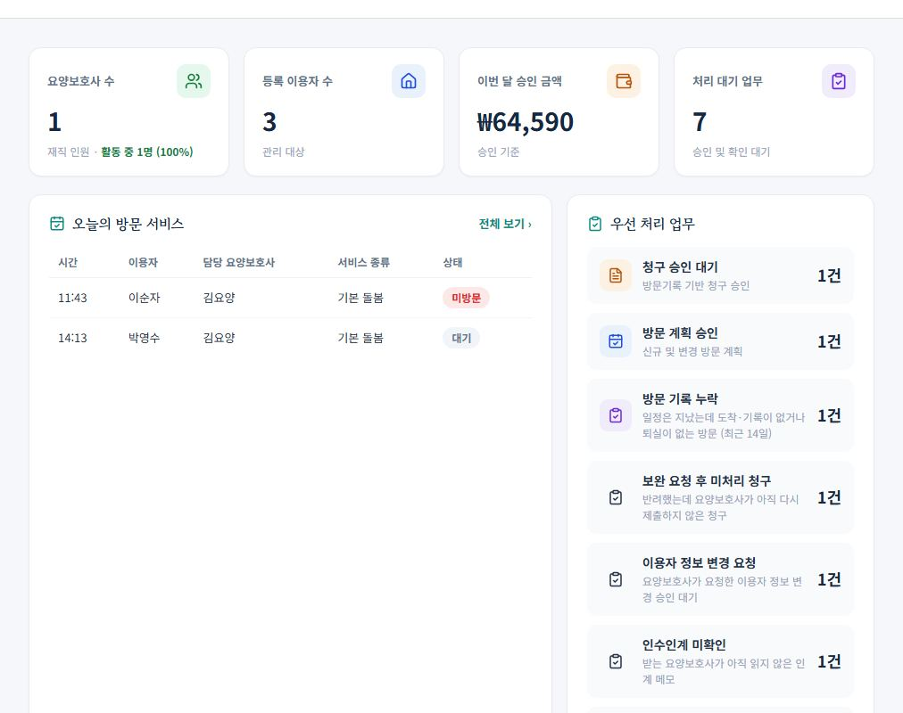
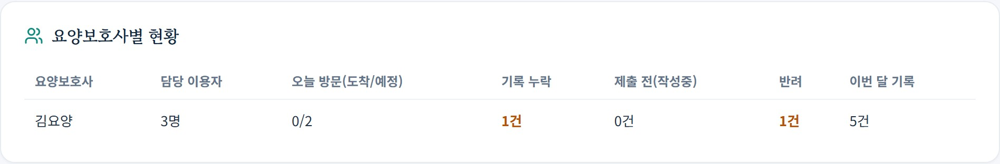
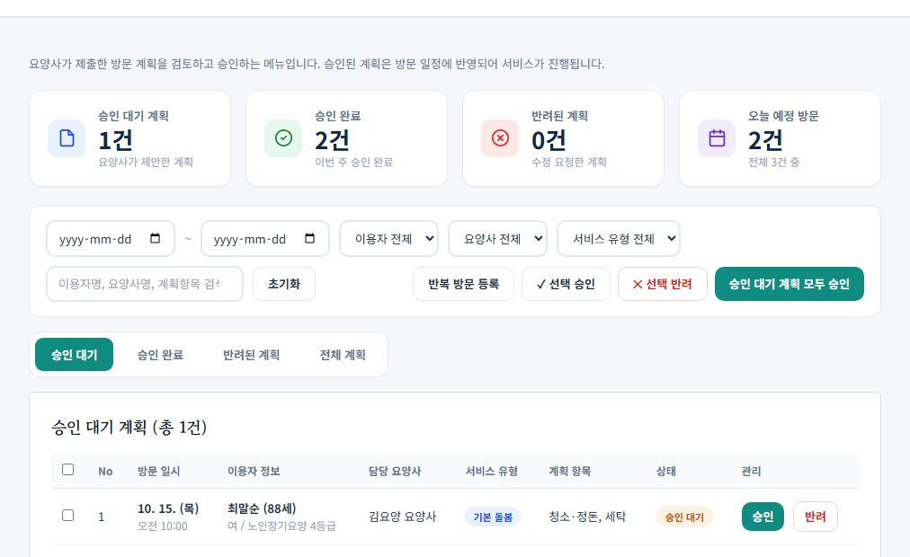
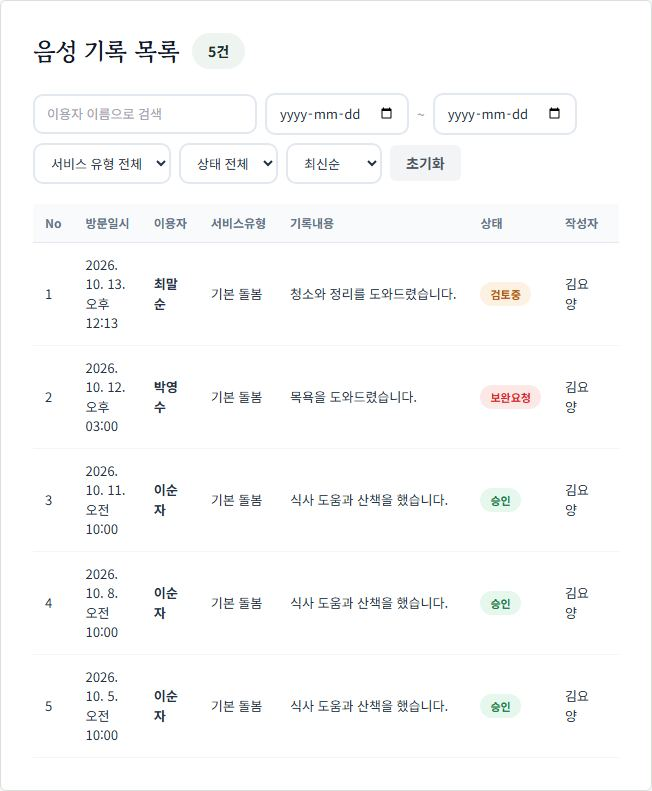
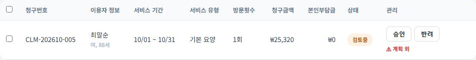
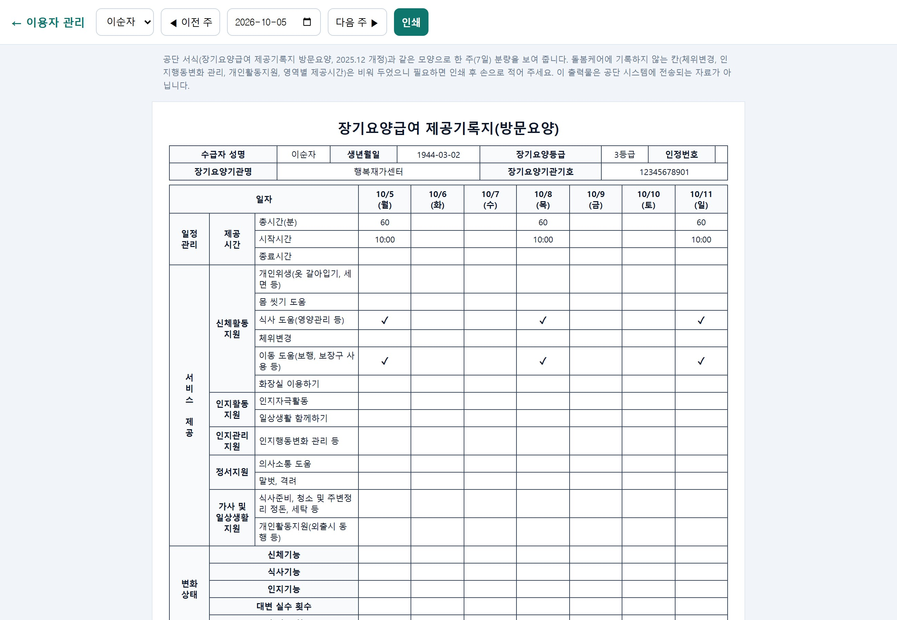
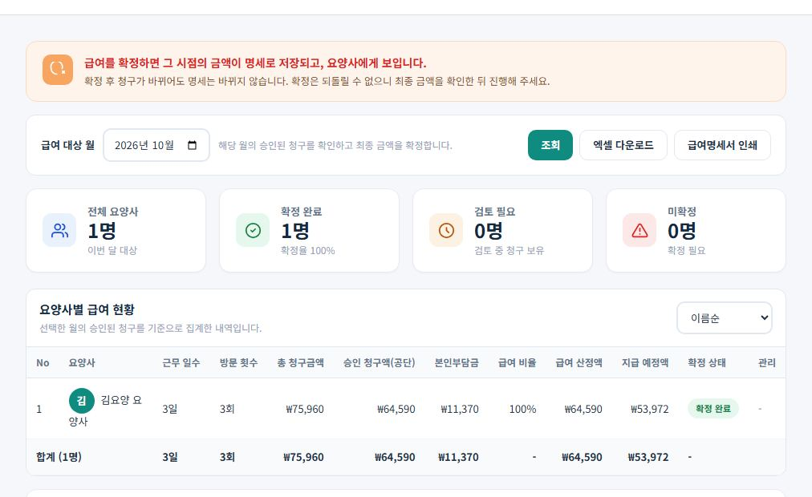
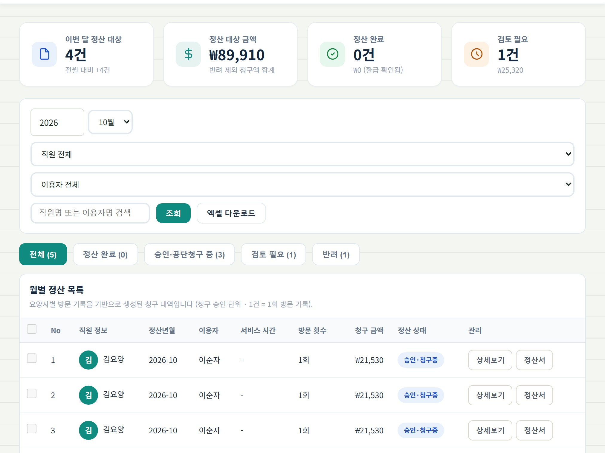

한눈에 보기: 요양보호사가 하면, 센터장 화면에서는
| 요양보호사가 하면 | 센터장 화면에서 | 센터장이 할 일 |
|---|---|---|
| 방문 계획을 제안 | 방문계획 승인의 "승인 대기" | 승인 또는 사유를 적어 반려 |
| 도착·퇴실을 누름 | 대시보드 오늘의 방문 서비스, 요양보호사별 현황 | 방문이 진행되는지 확인 |
| 음성 기록을 저장 | 방문 기록 현황 (상태 "작성중") | 내용 확인 (아직 승인할 것은 없음) |
| 나의 청구에서 제출 | 알림 + 대시보드 청구 승인 대기 → 청구관리 | 승인 또는 반려 |
| 사고·인수인계·이용자 정보 변경 요청 | 대시보드 우선 처리 업무 | 보호자 통보일·재발방지 기록, 변경 승인 |
| 기록을 안 하거나 제출을 안 함 | 우선 처리 업무 방문 기록 누락, 제출 안 한 방문 기록, 요양보호사별 현황 | 해당 요양보호사에게 안내 |
처음 한 번: 센터 준비
직원·이용자·보호자 등록과 담당 지정
- 직원관리에서 요양보호사 계정을 만듭니다. 비밀번호를 잊으면 센터장이 재설정할 수 있습니다.
- 이용자관리에서 이용자를 등록하고 담당 요양보호사를 지정합니다. 지정해야 그 요양보호사의 "담당 이용자"에 보입니다.
- 보호자 관리에서 초대 코드를 발급해 보호자에게 전달하면, 보호자가 가입해 방문 기록과 사진을 볼 수 있습니다.
- 센터 정보에 기관기호(11자리)를 넣어 두면 제공기록지 출력과 공단 점검에 쓰입니다.
요양보호사에게는 "사용 안내"(요양보호사 메뉴)를 보여 주세요. 순서와 제출 방법이 설명돼 있습니다.
매일 3분: 처리할 건 확인
대시보드의 "우선 처리 업무"
건수가 있는 항목이 위로 올라옵니다. 항목을 누르면 그 건만 걸러진 화면으로 이동합니다.
- 청구 승인 대기 → 청구관리에서 "검토 중"만 표시
- 방문 계획 승인 → 방문계획 승인 화면
- 방문 기록 누락 → 일정은 지났는데 도착·기록이 없는 방문(최근 14일)
- 제출 안 한 방문 기록 → 3일 넘게 "작성중"으로 남은 청구
- 보완 요청 후 미처리 청구, 이용자 정보 변경 요청, 인수인계 미확인, 사고 보고 보완 필요

요양보호사별 현황판
대시보드 아래의 표에서 누가 무엇을 밀렸는지 한눈에 봅니다. 밀린 칸은 주황색 굵은 글씨로 표시됩니다.
- 오늘 방문(도착/예정): 오늘 일정 중 도착을 누른 수
- 기록 누락: 시간이 지났는데 도착·기록이 없는 방문
- 제출 전(작성중): 기록은 했지만 제출하지 않은 청구
- 반려: 반려했는데 아직 다시 제출하지 않은 청구

승인하기
방문 계획 승인
방문계획 승인에 요양보호사가 제안한 계획이 "승인 대기"로 올라옵니다. 행의 승인 또는 반려를 누릅니다. 여러 건은 체크 후 "선택 승인"입니다.
- 승인된 계획이 요양보호사의 "오늘의 일정"에 확정으로 들어갑니다.
- 요양보호사가 승인된 일정의 시간을 바꿔 달라고 하면 화면 맨 위에 방문 일정 변경 요청 카드가 나타납니다. 변경 승인을 누르면 일정이 바뀌고(날짜·시간과 함께 바뀐 서비스 유형·제공 항목도 보입니다), 반려(사유 필수)하면 기존 일정이 그대로 유지됩니다.
- 센터장이 직접 일정을 넣으려면 반복 방문 등록으로 요일별 일정을 한 번에 만들 수 있습니다.

방문 기록 확인 (방문 기록 현황)
방문 기록 현황의 "전체 기록"에서 요양보호사별 기록 내용, 이용자, 서비스, 상태, 작성자를 봅니다. 이 화면은 내용을 확인하는 곳이고, 승인은 다음 5단계에서 합니다.
- 상태는 청구와 같은 값입니다: 작성중 → 검토중 → 승인, 반려하면 보완요청.
- 요양보호사 대신 입력할 때는 "+ 요양보호사 대신 기록 입력"을 눌러 기록할 요양보호사를 먼저 고릅니다.

청구 승인 또는 반려 (청구관리)
요양보호사가 제출하면 알림이 오고 청구관리에 "검토 중"으로 보입니다. 금액과 방문 내용을 확인하고 승인 또는 반려를 누릅니다. 반려할 때는 사유를 적으면 요양보호사에게 알림으로 갑니다.
- 승인하면 방문 기록 현황의 상태도 같이 "승인"으로 바뀝니다. 따로 승인하는 곳은 없습니다.
- 문제가 없는 건은 정상 건 일괄 승인으로 한 번에 처리할 수 있습니다.
- 승인된 건은 필요하면 공단 청구 처리와 환급 확인을 거쳐 자동으로 보관됩니다.

청구관리의 "⚠ 확인 표시" 읽는 법
| 표시 | 뜻 | 센터장이 할 일 |
|---|---|---|
| 계획 외 | 그 시간대에 승인된 방문 계획이 없는데 기록이 저장됨 | 대신 방문했거나 일정을 안 만든 경우인지 요양보호사에게 확인 후 승인·반려 |
| 도착 미기록 | 계획은 있는데 도착 버튼을 누르지 않음 | 실제 방문 여부 확인. 공단 전자태그와 맞지 않을 수 있음 |
| 제공 시간 초과 | 머문 시간보다 길게 기록함 | 실제 시간으로 고치도록 반려하거나 사유 확인 |
이 표시가 있어도 승인·반려는 모두 할 수 있습니다. 공단 점검에서 계획·도착·퇴실·기록이 서로 맞는지 보기 때문에 센터장이 한 번 더 확인하라는 용도입니다.
기록 서류와 평가 준비
제공기록지 출력 (이용자관리)
이용자관리 목록의 제공기록지를 누르면 이용자와 주(월요일 시작)를 골라 공단 서식(방문요양 급여제공기록지, 2025.12 개정) 모양으로 한 주 기록을 보고 인쇄할 수 있습니다.
- 방문 시작·종료 시각, 제공 항목, 변화상태, 대·소변 실수 횟수, 서명 여부가 자동으로 채워집니다.
- 돌봄케어에 기록하지 않는 칸(체위변경 등)은 비어 있으니 필요하면 손으로 적습니다.
- 이 출력물은 공단에 전송되는 자료가 아닙니다. 평가·점검 때 종이 기록지를 대신하는 용도입니다.
서비스 품질·평가 메뉴(급여제공계획, 상담 기록, 결과평가·사례관리, 교육·안내 기록, 평가 준비 자료)는 공단 평가 증빙을 모아 두는 곳입니다. 대시보드 "공단 전송 사전점검"이 부족한 기록을 알려 줍니다.

사고·인수인계·정보 변경 요청 처리
- 사고·응급 보고: 요양보호사가 보고하면 센터장이 보호자 통보일과 재발방지 대책을 기록합니다. 비어 있으면 "보완 필요"로 남습니다.
- 인수인계: 담당이 바뀌거나 대체 방문할 때 남기는 메모입니다. 받는 요양보호사가 "읽었습니다"를 누르면 확인됩니다.
- 이용자 정보 변경 요청: 요양보호사가 요청한 변경(등급, 소득분류 등)을 이용자관리의 승인 칸에서 승인하면 실제로 바뀝니다.
매달: 월 마감 순서
청구 승인 → 정산 확인 → 급여 확정
- 청구관리: 그 달 "검토 중"을 모두 처리합니다. 승인된 청구만 정산과 급여에 들어갑니다.
- 본인부담금: 이용자별 본인부담금을 확인하고 수납 기록을 남깁니다.
- 월별 정산: 요양보호사·이용자별 청구 현황을 확인합니다. 제출 전 "작성중" 건은 정산 대상에서 빠집니다.
- 급여 확정: 요양보호사별 승인 청구액에서 급여와 공제(소득세·연금·건강·고용)가 계산됩니다. 확정하면 되돌릴 수 없고 요양보호사의 "나의 급여"에 확정 명세가 보입니다. 확정 전에 검토 중인 청구가 남아 있지 않은지 꼭 보세요.
- 수익 분석: 확정된 달의 청구·수익 흐름을 봅니다.


상태 한눈에
- 작성중
- 요양보호사가 기록했지만 아직 제출하지 않음 (센터장이 승인할 수 없음)
- 검토중
- 제출됨. 센터장이 승인 또는 반려할 차례
- 승인(완료)
- 센터장이 승인함. 정산·급여에 들어감
- 보완 요청
- 센터장이 반려함. 요양보호사가 고쳐 다시 제출해야 함
- 공단 청구·환급
- 승인 후 공단에 청구하고 환급이 확인된 단계 (환급 확인 후 자동 보관)
돌봄케어 센터장 점검 순서
매일 3분
- 대시보드 → 우선 처리 업무에서 건수가 있는 항목을 누른다
- 방문계획 승인: 승인 대기 계획 승인·반려
- 청구관리: 검토 중 청구 승인·반려 (반려는 사유를 적는다)
- 요양보호사별 현황: 기록 누락·제출 전·반려가 있는 사람에게 안내
- 사고 보고는 보호자 통보일·재발방지 기록, 인수인계 미확인 확인
매달 마감
- 청구관리에서 그 달 검토 중을 모두 처리
- 본인부담금 수납 확인
- 월별 정산 확인
- 급여 확정 (되돌릴 수 없음 · 검토 중 청구가 남았는지 먼저 확인)
- 수익 분석 확인